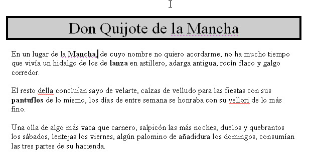
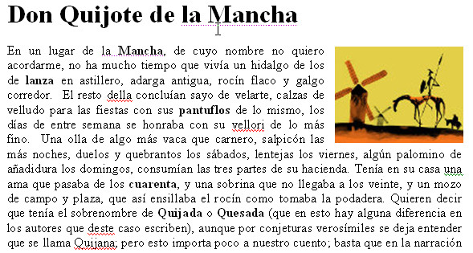

Vamos a realizar la tercera práctica de utilización del procesador de textos Word. Como el otro día no pudimos realizar alguno de los ejercicios, empezaremos haciendo un ejercicio de ortografía para posteriormente trabajar con Imágenes y bordes y sombreado.
Ejercicio de ortografia
Para hacer este ejercicio deberéis descargaros el siguiente archivo.
Primero que nada, comprueba cuál es el diccionario que tiene establecido el documento. ¿Es correcto? Cambiale el diccionario al que le corresponda. Para ello, deberás seleccionar primero todo el texto, y posteriormente cambiarle el tipo de diccionario
Seguidamente, corrige las faltas de ortografía que te indica Word hasta que el documento esté correcto .
Bordes y sombreado
Realicemos ahora un pequeño ejercicio de bordes y sombreado. Para ello, descárgate el documento que verás a continuación, e intenta aplicarle el formato que verás a continuación.
Imágenes
Finalmente, vamos a intentar añadir una imagen al documento que os adjunto a continuación, para que se visualice de manera parecida a la imagen que veréis a continuación.
{kind=link}